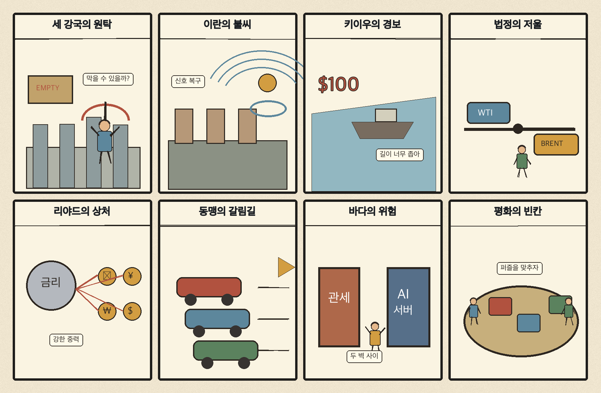
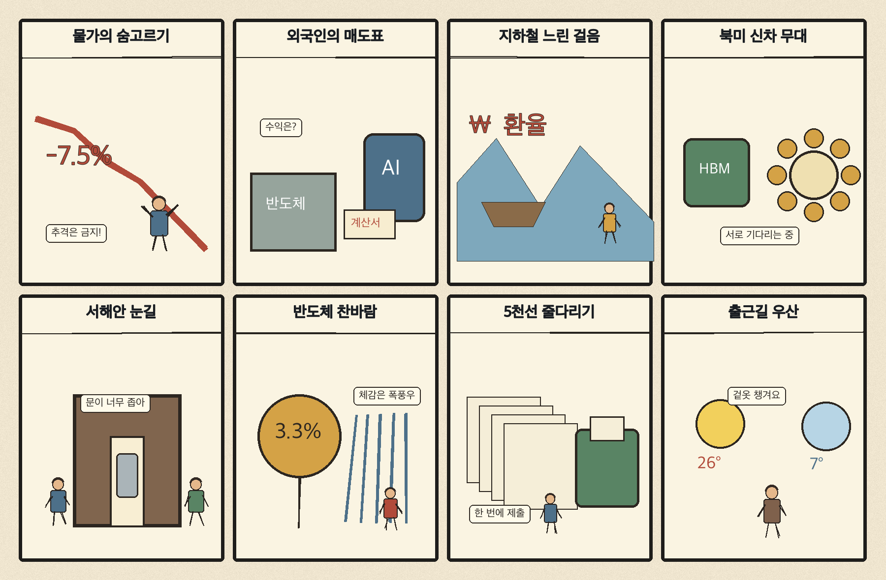

01
AMD · 543.48→489.19달러 · -9.99%
내용요약 시가 대비 -9.99%로 조사군 최하위였습니다.
예상여파 중국 기술유출 의혹과 위험회피가 AI 반도체 전반의 변동성을 키울 수 있습니다.
MORNING_BRIEFING_20261120
작성 시각: 2026-11-20 06:36 KST · 직전 미국 정규장과 2026-11-20 KST 당일 공개 기사 기준
11월 19일 뉴욕증시는 다우 -2.19%, S&P 500 -2.02%, 나스닥 -2.25%로 동반 급락했습니다. AMD가 시가 대비 -9.99%, 엔비디아가 -4.54% 밀리며 AI 반도체 위험회피가 두드러졌습니다. 전날 KOSPI는 +1.39% 상승하고 시가 대비 +0.94%로 마감했지만, 오늘은 미국발 충격과 외국인 수급 악화를 우선 경계해야 합니다.
| 지수 | 종가 | 등락률 | 한국 증시 시사점 |
|---|---|---|---|
| 다우존스 | 49,097.06 | -2.19% | 경기·금융 심리 위축 |
| S&P 500 | 7,175.83 | -2.02% | 위험회피 확대 |
| 나스닥 종합 | 23,879.20 | -2.25% | 기술주 변동성 경계 |
AI·대형 기술주 중심의 위험회피가 강화됐습니다.
전일 +1.39%, 시가 대비 +0.94%로 반등을 이어갔습니다.
중국 기술유출 의혹과 함께 반도체 변동성이 커졌습니다.
10월 국내 주식 수급 부담이 재확인됐습니다.
11월 19일 보고서는 점수·확률·손익비와 30건 이상 유사 조건 표본을 모두 검증한 후보가 없어 공식 추천을 내지 않았습니다. 사후 종목을 추가하지 않습니다.
| 시장 | 종가 | 등락률 | 기준 |
|---|---|---|---|
| KOSPI | 5,137.89 | +1.39% | 11월 19일 · 시가 대비 +0.94% |
| KOSDAQ | 684.81 | +3.32% | 11월 19일 · 시가 대비 +2.47% |
| 다우존스 | 49,097.06 | -2.19% | 미국 11월 19일 정규장 |
| S&P 500 | 7,175.83 | -2.02% | 미국 11월 19일 정규장 |
| 나스닥 종합 | 23,879.20 | -2.25% | 미국 11월 19일 정규장 |
월마트가 시가 대비 +1.92%로 급락장에서 방어했습니다.
다이아몬드백에너지가 +0.42%로 보합권을 지켰습니다.
AMD -9.99%, 마벨 -8.42%, 엔비디아 -4.54%였습니다.
어플라이드머티리얼즈 -7.72%, 구글 -7.30%로 밀렸습니다.
내용요약 시가 대비 -9.99%로 조사군 최하위였습니다.
예상여파 중국 기술유출 의혹과 위험회피가 AI 반도체 전반의 변동성을 키울 수 있습니다.
내용요약 시가 대비 -8.42%로 급락했습니다.
예상여파 AI 네트워크·반도체 투자 기대의 재평가가 국내 관련주 심리에도 부담입니다.
내용요약 시가 대비 -7.72% 하락했습니다.
예상여파 반도체 장비주의 약세는 설비투자 기대가 단기적으로 흔들리고 있음을 보여줍니다.
내용요약 시가 대비 -7.30%로 밀렸습니다.
예상여파 대형 플랫폼까지 매도가 확산되며 성장주 전반의 위험 프리미엄이 높아졌습니다.
내용요약 시가 대비 +1.92%로 조사군 최상위였습니다.
예상여파 급락장에서 필수소비재의 방어적 상대강세가 확인됐습니다.
미국 3대 지수가 2% 넘게 하락하고 AMD·마벨·엔비디아가 동반 약세를 보여 국내 반도체와 성장주에 강한 매도 압력이 예상됩니다. 전날 KOSPI·KOSDAQ 반등만 보고 추격하기보다 원달러 환율, 외국인 현·선물 수급, KOSPI 5,000선 지지 여부를 먼저 확인해야 합니다. 월마트 등 방어주 상대강세는 경기민감주보다 현금흐름과 실적 가시성을 선호하는 흐름을 시사합니다.
오늘은 추천 없음 — 현금 관망
미국 3대 지수의 2%대 급락과 AI 반도체 투매, 외국인 국내 주식 순매도 부담이 겹쳤습니다. 개장 전 당일 시가·실시간 수급과 30건 이상 유사 조건 표본을 확보하지 못해 종합점수 75점·상승확률 60%·예상 손익비 1.5를 모두 검증한 후보가 없습니다.
관심 연결종목 필수소비재·에너지 방어주는 관찰 대상일 뿐 매수 추천이 아닙니다. 장전 약세 뒤 반등하는 종목도 추격매수를 금지합니다.
미국발 급락 충격 속 지지 여부를 확인합니다.
국내 HBM·반도체 대형주의 수급 전이를 봅니다.
현물과 선물의 동시 순매도 확대 여부를 점검합니다.
이란 관련 긴장과 국제유가·해상운임 반응을 확인합니다.
핵심 요약: AMD의 중국 기술유출 의혹과 AI 반도체 급락이 규제·밸류에이션 위험을 동시에 드러냈습니다. 앤트로픽의 상장과 안전 강조, 유럽연합 대상 AI 사이버공격, 유통업의 AI 개인화는 자본·안전·보안·상용화의 네 축을 보여줍니다.
내용요약 AMD가 미국 제재 대상 중국 기업으로의 기술 유출 의혹에 휘말리며 AI 반도체의 중국 사업 위험이 다시 부각됐습니다.
예상여파 첨단칩 수출 통제와 규제 비용이 커지면 미국 반도체 기업의 중국 매출과 국내 공급망 심리에도 부담이 될 수 있습니다.
내용요약 앤트로픽 최고경영자가 나스닥 상장일에 AI 개발 속도 조절과 안전 원칙을 재차 강조했습니다.
예상여파 대형 AI 기업의 상장이 기술 성장뿐 아니라 안전·책임 기준을 자본시장의 평가 요소로 끌어올릴 수 있습니다.
내용요약 유럽연합 집행위원회가 AI를 활용한 사이버공격을 받은 것으로 보도됐습니다.
예상여파 공공기관과 기업의 생성형 AI 보안, 접근권한 관리, 공급망 방어 투자가 더 빨라질 수 있습니다.
내용요약 올리브영이 AI 추천으로 검색과 스크롤을 줄이는 온·오프라인 쇼핑 경험을 선보였습니다.
예상여파 유통업의 AI 개인화 경쟁이 구매 전환율과 해외 고객 확장의 핵심 수단으로 자리 잡을 수 있습니다.
내용요약 앤트로픽 상장에도 뉴욕증시가 2%대 급락하며 AI 기대와 위험회피가 엇갈렸습니다.
예상여파 상장 흥행만으로 기술주 전반을 떠받치기 어려워지면서 실적·밸류에이션에 따른 차별화가 커질 수 있습니다.
핵심 요약: 미·중·러 회담은 선언적 성격에 머물렀고, 이란·우크라이나·사우디를 둘러싼 군사 위험은 계속됐습니다. 국제사법재판소의 로힝야족 판결은 국제 인권법 집행의 중대한 이정표입니다.
내용요약 미·중·러 정상회담이 뚜렷한 돌파구보다 강대국별 세력권을 강조한 선언적 만남에 그쳤다는 평가입니다.
예상여파 동맹과 중견국의 외교 불확실성이 커지고 무역·안보 공급망의 블록화가 이어질 수 있습니다.
내용요약 이스라엘 지도부가 대이란 군사행동을 불가피하게 보고 시기를 조율 중이라는 보도입니다.
예상여파 중동 확전 우려가 국제유가와 해상운임, 안전자산 가격의 변동성을 높일 수 있습니다.
내용요약 국제사법재판소가 미얀마의 로힝야족 집단학살 책임을 인정하는 기념비적 판단을 내렸습니다.
예상여파 국제 인권법 집행과 미얀마 정권에 대한 외교·경제 압박이 강화될 수 있습니다.
내용요약 러시아의 평화 메시지와 달리 키이우에서 폭발이 이어져 사상자가 발생했습니다.
예상여파 종전 협상의 신뢰가 약해지고 유럽의 방위비·우크라이나 지원 논쟁이 장기화할 수 있습니다.
내용요약 후티 미사일로 사우디 리야드의 비전2030 상징 빌딩이 파손됐다는 보도입니다.
예상여파 중동 핵심 도시의 안보 위험이 커지면 투자 프로젝트와 에너지·물류 비용에 위험 프리미엄이 붙을 수 있습니다.

핵심 요약: 생산자물가는 완화됐지만 외국인의 대규모 주식 순매도가 금융시장 부담으로 남았습니다. 서울지하철 준법투쟁과 서해안 눈은 이동·물류에 영향을 주며, 현대·기아차는 북미 신차 경쟁을 강화합니다.
내용요약 10월 생산자물가가 전월보다 0.1% 하락했고 사과와 돼지고기 가격도 크게 내렸습니다.
예상여파 원가 압력 완화는 소비자물가 안정에 보탬이 되지만 품목별 변동성과 겨울 에너지 비용은 계속 점검해야 합니다.
내용요약 외국인이 10월 국내 주식을 26조원 순매도해 두 달 연속 매도세를 이어갔습니다.
예상여파 대형 수출주와 지수의 수급 부담이 이어질 수 있어 환율과 외국인 선물 흐름을 함께 살펴야 합니다.
내용요약 서울지하철 노조가 준법투쟁에 들어가 출퇴근 시간 열차 지연이 예상됩니다.
예상여파 통근 차질과 혼잡이 커질 수 있으며 노사 협상 진행에 따라 시민 불편이 장기화할 가능성이 있습니다.
내용요약 현대차와 기아가 LA오토쇼에서 신차를 공개하며 북미 시장 공략을 강화했습니다.
예상여파 신차 효과와 현지 생산 확대는 판매 경쟁력에 긍정적이지만 관세·환율 변화가 수익성 변수입니다.
내용요약 충남·전라·제주에 눈 또는 비가 예보됐고 서해안에는 최대 7㎝의 눈이 예상됩니다.
예상여파 빙판길과 항공·해상 운항 차질 가능성이 있어 출근길과 물류 일정의 안전 관리가 필요합니다.
